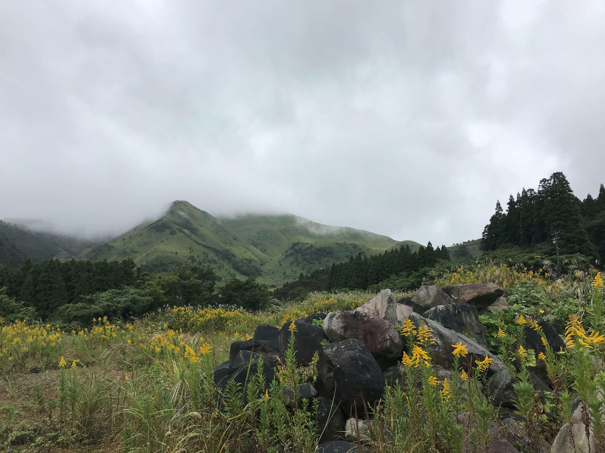
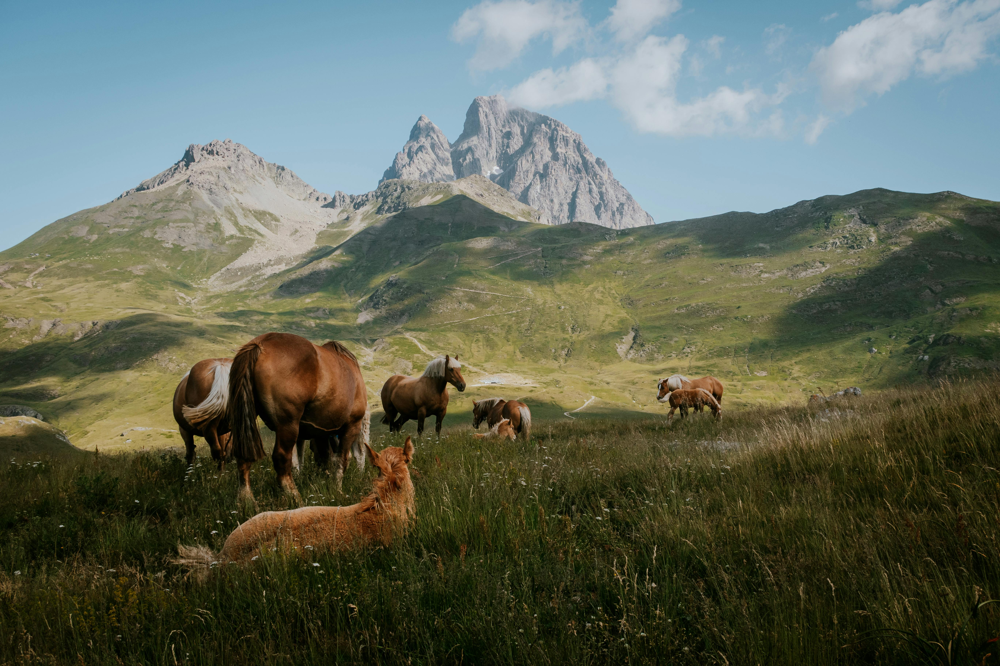

Unique Characteristics and Biodiversity
Dive into what makes mountain ecosystems truly special, exploring the profound influence of elevational gradients. As altitude increases, temperatures drop, atmospheric pressure decreases, and UV radiation intensifies, creating distinct "life zones" from the verdant montane forests at lower elevations to the hardy subalpine and nival zones near the peaks. This vertical zonation fosters incredible microclimates and a mosaic of habitats, leading to a remarkable diversity of life. Discover the extraordinary adaptations of mountain flora, such as the low-lying, wind-resistant cushion plants and deeply rooted species, and specialized fauna like thick-furred mammals capable of hibernation or migration. These unique evolutionary pressures make mountains biodiversity hotspots, often boasting an exceptionally high number of endemic species found nowhere else on Earth. The rugged geological features, sculpted by ancient glaciers and ongoing tectonic activity, further contribute to this intricate tapestry of life, creating isolated valleys and diverse terrain that foster unique evolutionary pathways..
Ecological Importance and Ecosystem Services
Uncover the vital and often underestimated role mountains play in sustaining life far beyond their majestic peaks. Foremost, they are the "water towers of the world," providing essential freshwater to an estimated half of the global population. Snowpack and glaciers act as natural reservoirs, storing water and releasing it gradually, feeding major rivers that nourish vast agricultural lands, support urban centers, and power industries downstream. Beyond water, mountain forests are crucial carbon sinks, absorbing immense quantities of atmospheric carbon dioxide, thereby playing a significant role in mitigating climate change. They are also indispensable biodiversity reservoirs, housing countless plant and animal species, including many rare and endangered ones, thus contributing significantly to global ecological stability. Furthermore, mountain vegetation provides essential soil stability, preventing erosion, landslides, and floods that can devastate both mountain communities and lowland areas. Culturally and recreationally, mountains hold immense spiritual and aesthetic value, offering opportunities for tourism, traditional practices, and a profound connection to nature.

Threats and Challenges
Examine the escalating pressures facing these irreplaceable and fragile environments. The most pervasive threat is climate change, manifesting as accelerated glacier melt, altered precipitation patterns leading to increased droughts or floods, and crucial shifts in species distribution as flora and fauna struggle to adapt to warming temperatures, often migrating to higher, scarcer altitudes or facing extinction. Human activities also exert immense pressure, with deforestation driven by logging and agricultural expansion (especially for livestock and cash crops) leading to severe habitat loss, soil erosion, and disruption of vital water cycles. Unsustainable resource extraction, including destructive mining practices and overgrazing, further degrades mountain landscapes. Pollution, even from distant sources, impacts remote mountain ecosystems, affecting water quality and delicate ecological balances. Finally, uncontrolled tourism, while economically beneficial, can lead to trail erosion, excessive waste generation, disturbance to wildlife, and strain on already limited local resources, compounding the vulnerabilities of mountain communities.

Conservation Efforts and Sustainable Management
Explore the critical global efforts underway to protect and restore the invaluable mountain ecosystems. A cornerstone of these efforts involves establishing and effectively managing protected areas, such as national parks and wildlife sanctuaries, which safeguard biodiversity and critical habitats. Emphasis is placed on promoting sustainable land use practices, including responsible forestry, agroforestry, terracing, and carefully managed grazing, to minimize environmental impact while supporting local livelihoods. Crucially, strategies for climate change adaptation and mitigation are being developed to enhance the resilience of both mountain ecosystems and their human communities. Recognizing the deep connection between people and their environment, there's a strong focus on community engagement and integrating traditional ecological knowledge into conservation plans. International cooperation, global policies, and initiatives from organizations like the FAO and UNEP are vital in coordinating efforts. Furthermore, promoting responsible tourism and widespread environmental education are essential for raising awareness and fostering a stewardship ethic among visitors and the broader public, ensuring these majestic environments thrive for future generations.
